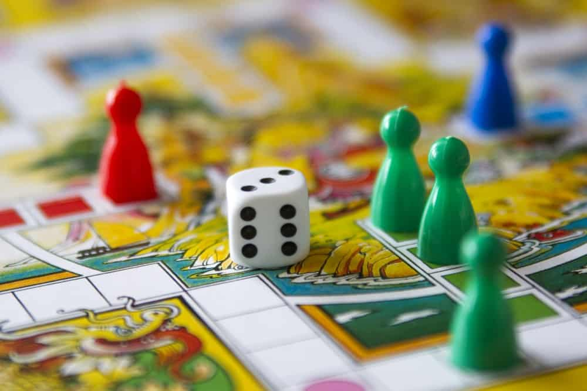
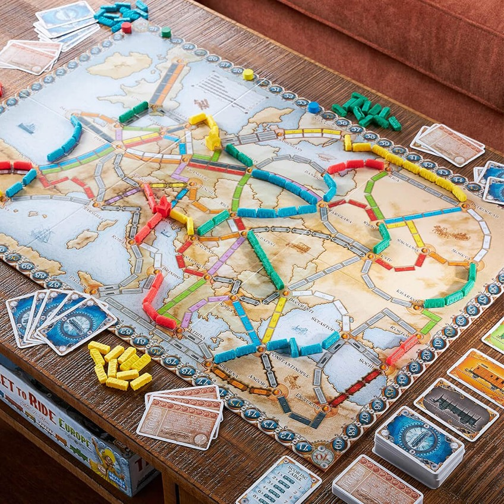

In Board Games Club, students gather around, and play board games.Students use tactics and strategies to win the games, and they always have fun playing it.However, the main goal of this club is not only having fun, it practices students' way of thinking.They think about what should they do next, what is the purpose of doing this, and what can they do better next time.Also, students socialize and bond while they are playing.They collaborate, and talk to each other, and make new friends at the same time when they are having fun.
What is board game?

Board games are games that play across a board, which usually includes two or more players.Board games are usually play on cards rather than on electronic devices.Simple props like dice, cards, and checkerboard are needed when playing board games.There are many famous board games like chess, poker, flying chess, and chinese chess.